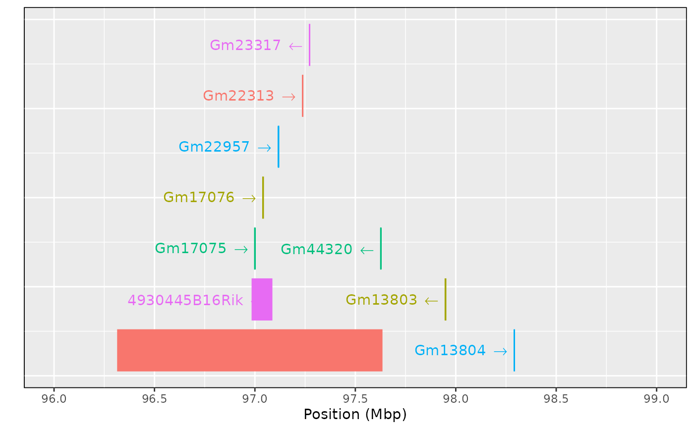

Plot gene locations for a genomic interval, as rectangles with gene symbol (and arrow indicating strand/direction) below.
Usage
ggplot_genes(
object,
xlim = NULL,
minrow = 4,
padding = 0.2,
colors = c("black", "red3", "green4", "blue3", "orange"),
...
)
# S3 method for class 'genes'
autoplot(object, ...)Arguments
- object
Object of class
object- xlim
x-axis limits (in Mbp)
- minrow
Minimum number of rows of object
- padding
Proportion to pad with white space around the object
- colors
Vectors of colors, used sequentially and then re-used.
- ...
Optional arguments passed to
plot.
Examples
filename <- file.path("https://raw.githubusercontent.com/rqtl",
"qtl2data/master/DOex",
"c2_genes.rds")
tmpfile <- tempfile()
download.file(filename, tmpfile, quiet=TRUE)
gene_tbl <- readRDS(tmpfile)
unlink(tmpfile)
ggplot_genes(gene_tbl)
